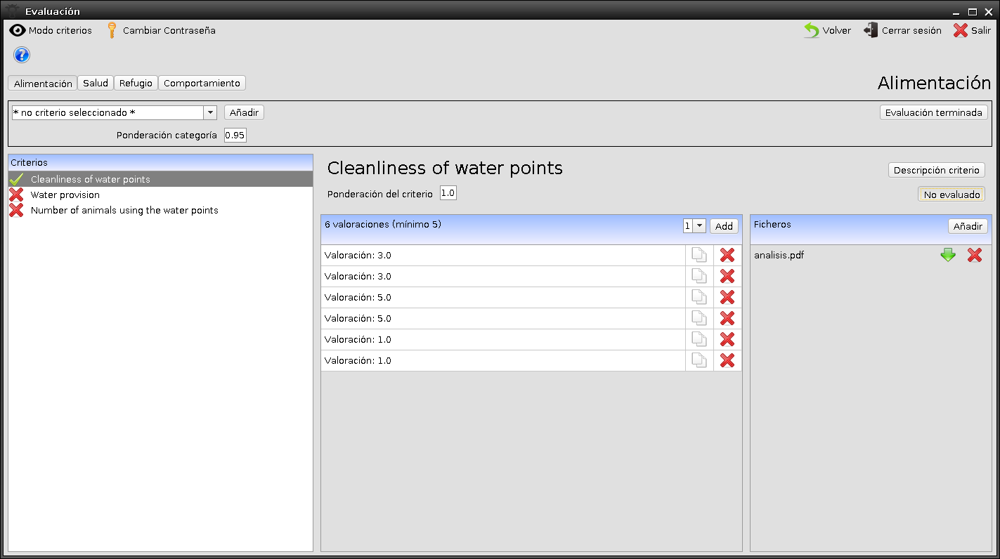

HappyCow
HappyCow es un programa pensado para realizar evaluaciones del bienestar animal vacuno en granjas.
La última versión compilada se puede encontrar en la carpeta Release, así como las releases del propio github.
Tiene una parte de administrador y otra de usuario y se tiene aquí el manual de usuario.
Capturas de pantalla


Compilar HappyCow desde netbeans
Crear un proyecto en Netbeans, descargar el código fuente en otra carpeta y copiar la carpeta nbproject y el fichero build.xml en la carpeta del código fuente. Abrir el proyecto desde Netbeans.
Para una correcta generación del jar, con sus librerías dentro y el splashscreeen, se necesita:
- Incluir las carpetas involucradas (resources) como carpetas fuentes en netbeans
- Asegurarse de tener en el manifest.mf la línea SplashScreen-Image: images/logo.png
- En el fichero build.xml de netbeans añadir dentro de las etiquetas project lo siguiente: